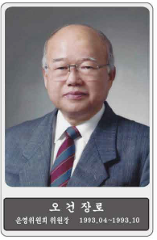
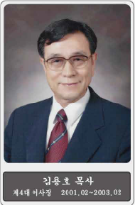
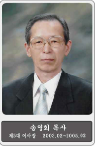
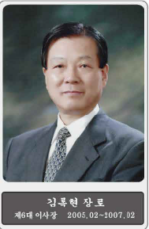
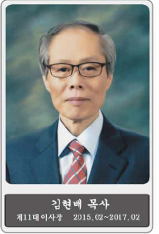
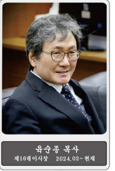

1982. 3. 18.
한국기독교회관 신관건축위원회 조직
1982. 7. 14.
선교부 대지(연지동136-56 외 10필지 1,505평) 현물출연
1984. 2. 22.
인접대지 36.91평, 대한보증보험으로부터 매입
1989. 5. 4.
건축허가취득(지하5층, 지상17층, 연건평 10,258평)
1989. 9. 8.
기공 예배
1992. 2. 13.
한국기독교연합회관으로 명명
1992. 9. 16
3차 설계변경(지하4층, 지상17층, 연면적 9,674.46평)
1992. 10. 5
준공 필
1992. 10. 23.
준공예배, 건축위원회 해산
1992. 10. 23.
한국기독교연합회관운영위원회(가칭) 조직
1992. 12. 31.
건물 지분등기 필
1993. 3. 30.
한국기독교연합회관 창립총회
1993. 4. 30.
한국기독교연합회관운영위원회 조직위원장 오 건 장로
1993. 4. 30 ~ 2005. 5. 15
제1대 관리처장 전 홍 덕 장로
1993. 10. 15 ~ 1995. 2. 28.
위원장 황 칠 수 목사 보선
1994. 6. 30.
토지 지분등기 필
1995. 2. 28 ~ 1997. 2. 20.
제1대 이사장 황 칠 수 목사
1997. 2. 20 ~ 1999. 2. 26.
제2대 이사장 황 칠 수 목사
1998. 4. 6.
도시계획사업실시 토지 238-16(9.4㎡) 수용
1999. 2. 26 ~ 2001. 2. 18.
제3대 이사장 김 상 근 목사
2001. 2. 18 ~ 2003. 2. 23.
제4대 이사장 김 용 호 목사
2003. 2. 23 ~ 2005. 2. 24.
제5대 이사장 송 영 회 목사
2005. 2. 24 ~ 2007. 2. 20
제6대 이사장 김 록 현 장로
2005. 5. 16 ~ 2024. 2. 29
제2대 관리처장 박 명 규
2007. 2. 22 ~ 2009. 2. 23.
제7대 이사장 임 명 규 목사
2009. 2. 23 ~ 2011. 2. 22.
제8대 이사장 한 정 원 목사
2011. 2. 22 ~ 2013. 2. 24.
제9대 이사장 임 명 규 목사
2013. 2. 24 ~ 2015. 2. 24.
제10대 이사장 한 정 원 목사
2015. 2. 24 ~ 2017. 2. 7.
제11대 이사장 김 현 배 목사
2017. 2. 7 ~ 2019. 2. 14.
제12대 이사장 한 정 원 목사
2019. 2. 14 ~ 2021. 2. 16.
제13대 이사장 문 재 용 목사
2021. 2. 16 ~ 2024. 2. 16
제14·15대이사장 김 영 걸 목사
2024. 2. 1 ~ 현재
제3대 관리처장 조 인 형 장로
2024. 2. 16 ~ 현재
제16대 이사장 육 순 종 목사
2024. 2. 16.
제32차 정 기 총 회

오건 장로
운영위원회위원장 1993.04~1993.10

황칠수 목사
운영위원회위원장 1993.10~1995.02
제1,2대 이사장 1995.02~1999.02

김상근 목사
제3대 이사장 1999.02~2001.02

김용호 목사
제4대 이사장 2001.02~2003.02

송영회 목사
제5대 이사장 2003.02~2005.02

김록현 장로
제6대 이사장 2005.02~2007.02

임명규 목사
제7대 이사장 2007.02~2009.02
제9대 이사장 2011.02~2013.02

한정원 목사
제8대 이사장 2009.02~2011.02
제10대 이사장 2013.02~2015.02
제12대 이사장 2017.02~2019.02

김현배 목사
제11대 이사장 2015.02~2017.02
문재용 목사
제13대 이사장 2019.02~2021.02
김영걸 목사
제14,15대 이사장 2021.02~2024.02

육순종 목사
제16대 이사장 2024.02~현재